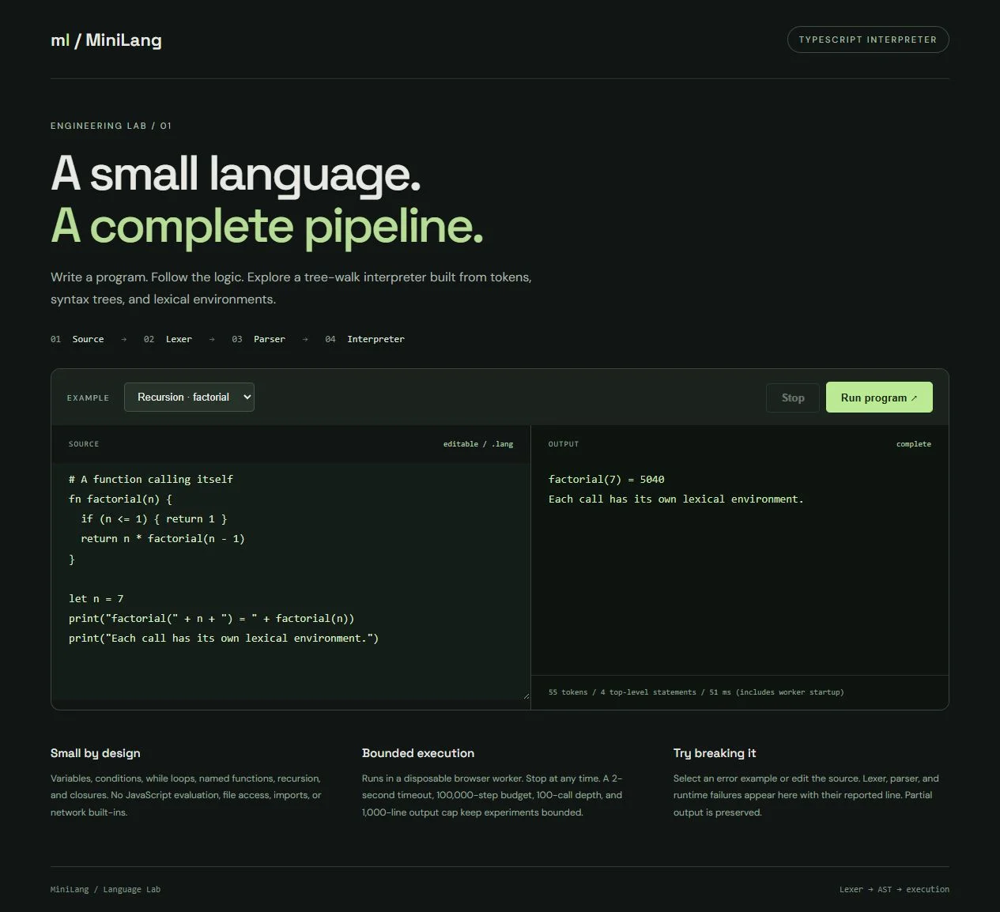

Engineering project · Runtime screenshot
MiniLang Interpreter
A TypeScript language pipeline with lexical environments, recursion, closures and a bounded browser playground.
Local demonstration · Static runtime preview
View GitHub source
Problem
Language features need consistent scope, logical precedence, return behavior and readable execution errors.
Architecture
A lexer feeds a recursive-descent parser and tree-walk interpreter. The browser runs the actual interpreter in a disposable worker; the CLI provides a persistent REPL.
Engineering decisions
- Give blocks child environments and separate AND/OR precedence.
- Validate native arity/types and propagate returns explicitly.
- Bound visits, call depth and output; terminate browser workers on timeout.
Implemented workflow
- Inspect editable examples including factorial and returned counter closures.
- Display tokens/statement counts, output and language errors; preserve/reset REPL state.
Verified result
62 interpreter tests, type checks, CLI/REPL checks, production build and browser examples passed.
- Verification describes the prepared local checkout on 28–29 October 2026; it is not a production or business outcome claim.
- Prepared improvements have not been pushed; the public repository may differ from this runtime preview.
Scope and next steps
- Educational language: no arrays/objects, modules or JavaScript interop; numbers use JavaScript floating-point behavior.
- Worker limits are demo safeguards, not a hardened hostile-code sandbox or memory quota.
- Manual Stop was not independently confirmed; interpreter-budget termination and subsequent recovery were verified.
Technology
TypeScript · Lexer · Parser · AST · Web Workers · Vite
Preview availability
Static runtime preview. No hosted interactive demo is available. The prepared improvements were verified in a local checkout and have not been pushed to GitHub; public source may differ from these captures. Use the repository documentation for the public version's setup requirements.
← Return to portfolio